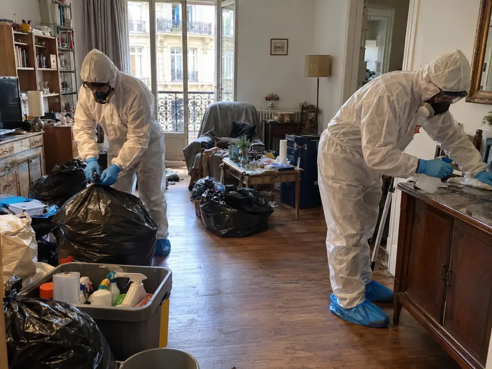

Nettoyage syndrome de Diogène à Paris 4e (75004)
Une présence calme et professionnelle pour rendre un logement du 4e arrondissement plus sain, à votre rythme.
De l’île Saint-Louis à la place des Vosges, de nombreux appartements cachent une situation que l’entourage a parfois du mal à aborder. Le XV du Nettoyage accompagne les familles, les voisins et les occupants du 4e avec discrétion, écoute et sans jugement.
Selon le devis établi après la visite, nous assurons le tri des effets personnels, le débarras, le nettoyage approfondi, la désinfection et le traitement des origines d’odeurs.
gratuitvisite et chiffrage
Un logement du 4e qui déborde : agir avec calme, étape par étape
Le 4e arrondissement couvre 160 hectares sur la rive droite de la Seine. Il comprend la partie est de l’île de la Cité et l’île Saint-Louis, et se répartit en quatre quartiers : Saint-Merri, Saint-Gervais, l’Arsenal et Notre-Dame.
Entre un immeuble de pierre proche de l’Hôtel de Ville et un escalier de l’île Saint-Louis, les situations d’accumulation passent longtemps inaperçues. Ce sont souvent une odeur sur le palier, un courrier qui s’empile ou un voisin inquiet qui déclenchent l’appel. Le diagnostic appartient à un médecin ; notre rôle est de remettre le logement en état d’être nettoyé, assaini et sécurisé.
Nous travaillons dans les studios, les deux-pièces, les appartements familiaux et les chambres de service du 75004, de la rue des Rosiers aux abords de la Bastille. La visite et le devis écrit ne coûtent rien.
- Visite à domicile, puis devis écrit avant toute intervention
- Tri soigneux des papiers, de l’argent, des bijoux et des souvenirs
- Débarras, nettoyage, désinfection et traitement des odeurs selon le devis
- Équipes en tenue de protection, véhicule sans logo

Vider un appartement Diogène dans le Marais, sur l’île Saint-Louis ou près de la Bastille
Dans le 4e, les immeubles sont souvent anciens, avec des escaliers étroits et des cours intérieures. Le Marais compte plusieurs hôtels particuliers, comme l’hôtel de Sully ou l’hôtel de Beauvais. Dans un bâti de ce genre, évacuer des sacs sans abîmer les marches ni gêner les voisins demande de la préparation.
Lors de la visite, nous relevons l’étage, la largeur de la cage d’escalier, la présence ou non d’un ascenseur et la distance jusqu’à l’endroit où le véhicule peut s’arrêter. Dans certaines rues très étroites, nous convenons avec vous du bon créneau pour limiter l’attente et le bruit.
Indiquez-nous votre rue et, si vous le souhaitez, la station de métro la plus proche : Saint-Paul, Pont Marie, Hôtel de Ville, Rambuteau ou Bastille, par exemple. Nous précisons ensuite avec vous l’heure d’arrivée et les protections à poser dans les parties communes.

Syndrome de Diogène : ce qu’on observe dans un logement
Le syndrome de Diogène ne se ressemble jamais d’une personne à l’autre, et seul un professionnel de santé peut le constater. Voici ce que l’on observe le plus souvent dans les logements.
Des passages qui se ferment
Piles de cartons, sacs et meubles rétrécissent peu à peu les allées, jusqu’à rendre certaines pièces inaccessibles.
Des biens gardés « au cas où »
Journaux, emballages, objets cassés ou récupérés dans la rue sont conservés, même quand ils n’ont plus aucune utilité.
Des restes de nourriture
Aliments périmés, vaisselle laissée en place et déchets non évacués favorisent les odeurs et les nuisibles.
Des démarches abandonnées
Lettres, avis et factures restent fermés, ce qui peut aggraver la situation administrative et financière.
Une hygiène qui décline
La salle de bain, la cuisine et le linge ne sont plus entretenus, parfois par fatigue ou par manque de moyens.
Une porte qui reste close
Par pudeur ou par crainte d’être jugée, la personne évite les visites. Un premier échange doit rester doux et patient.
Remarquer l’un de ces signes ne signifie pas qu’on peut poser un diagnostic. Le plus utile est d’en parler avec bienveillance à la personne, puis de contacter son médecin traitant ou un service social. Le nettoyage est ensuite organisé avec elle, à un rythme qu’elle peut accepter.
De la première visite au dernier contrôle : six étapes claires
Chaque étape est annoncée à l’avance, pour que vous sachiez à quoi vous attendre.
Premier contact
Vous nous indiquez l’adresse, l’étage et la situation du logement. Quelques photos envoyées par SMS nous aident à préparer la visite.
Visite sur place
Nous parcourons les pièces, évaluons l’accès et la quantité à évacuer, et notons avec vous les objets à préserver.
Devis écrit
Le devis détaille séparément le tri et le débarras, le nettoyage, la désinfection et d’éventuels travaux. Aucune intervention ne commence sans votre accord.
Dégagement et tri
Nous rouvrons d’abord les passages, puis nous trions pièce après pièce selon les consignes convenues.
Nettoyage et désinfection
Cuisine, sanitaires, sols, murs et textiles sont traités selon le devis, puis nous nous occupons des origines d’odeurs.
Point de fin de chantier
Nous vous remettons la facture détaillée et faisons avec vous le tour de chaque pièce.
Pour découvrir notre organisation en détail, consultez la page méthode.
Mettre à l’abri ce qui compte avant d’évacuer le reste
Sous les piles se cachent parfois des documents essentiels : contrats, relevés, titres de propriété, lettres de famille, enveloppes de liquide ou bijoux. Un débarras précipité risquerait de les emporter avec les déchets.
Avant de commencer, nous convenons avec vous de ce qui doit être préservé : documents administratifs, papiers d’identité, argent et bijoux, photographies et souvenirs, clés et objets personnels importants. Ils sont réunis séparément, puis remis à la personne, à ses proches ou à son représentant. Les déchets, les objets brisés et les éléments souillés sont évacués. Si nous trouvons un objet de valeur ou si un désaccord apparaît sur son sort, le tri concerné est suspendu jusqu’à clarification.
Les annexes sont à signaler dès la visite pour entrer dans le devis : cave, grenier, chambre de service, cour ou balcon.

Après le débarras, un nettoyage approfondi puis une désinfection adaptée
Dégager une pièce ne suffit pas : saletés incrustées, humidité et résidus alimentaires laissent des traces dans les sols, les joints et les tissus.
Nous traitons les pièces dans l’ordre, en commençant par la cuisine et les sanitaires, souvent les plus touchés. Le nettoyage approfondi précède la désinfection, choisie selon les matériaux et les besoins, comme l’indique le devis. Pour les odeurs, nous cherchons leur origine afin de les traiter à la source au lieu de les masquer.
Si nous remarquons des cafards, des rongeurs ou des punaises de lit, nous vous le signalons. Leur éradication relève d’un spécialiste de la désinsectisation ou de la dératisation, que nous pouvons aider à faire intervenir en lien avec notre chantier.


Des surfaces remises en propreté, et un constat honnête sur l’état du logement
Selon le devis, l’intervention comprend le tri, le débarras, le nettoyage approfondi, la désinfection et le traitement des odeurs. Les surfaces concernées sont remises en propreté : sols, murs, vitres, radiateurs, cuisine et sanitaires.
Une fois le logement vidé, des dégâts invisibles auparavant peuvent apparaître : parquet détérioré, humidité, moisissures, électricité ou plomberie à vérifier, revêtements abîmés. Nous vous le disons simplement. Si des travaux sont nécessaires, ils sont chiffrés dans un devis séparé.
- Sols, murs, vitres et radiateurs nettoyés selon le devis
- Cuisine et sanitaires désinfectés avec des produits adaptés
- Facture détaillée et visite de contrôle pièce par pièce

Quel prix pour un nettoyage Diogène à Paris 4e ? Ce que contient le devis
Le tarif ne s’obtient pas en multipliant des mètres carrés : deux logements de même taille peuvent demander des chantiers très différents. Voici ce que nous évaluons pendant la visite.
Taille du logement
Un studio ou un grand appartement avec cave et chambre de service : l’étendue du chantier n’est pas la même.
Volume à enlever
Le nombre de sacs, de cartons et de meubles fixe la durée du tri et du portage.
Étage et trajet
Un escalier étroit ou un véhicule garé loin ajoutent du temps à chaque rotation.
Degré de salissure
Un logement encombré mais propre ne se traite pas comme un logement fortement souillé.
Nuisibles et moisissures
Leur présence demande un traitement spécifique, prévu en plus du nettoyage.
Travaux éventuels
Ce qui relève de la rénovation fait l’objet d’un chiffrage distinct, avec votre accord.
Le devis est écrit, gratuit et remis après la visite. Il indique ce qui sera réalisé selon l’état du logement : tri et débarras, nettoyage approfondi, désinfection et traitement des odeurs lorsque c’est utile, puis travaux complémentaires éventuels chiffrés à part. Pour comprendre comment il se construit, consultez notre page tarifs.
Entreprise de nettoyage Diogène : les points à vérifier avant de signer
Pour une intervention aussi intime, comparez plusieurs devis écrits en les lisant ligne à ligne. Avant de vous décider, vérifiez :
- L’identité de l’entreprise : numéro SIRET et assurance responsabilité civile professionnelle
- Le contenu du prix : tri, évacuation, déchetterie, désinfection, et ce qui reste exclu
- La façon dont les papiers, l’argent et les objets personnels sont traités
- La visite préalable : un tarif donné au téléphone sans avoir vu le logement ne peut être qu’approximatif
- La discrétion : véhicule sans logo, tenue neutre, horaires adaptés à l’immeuble

Fils, fille, voisin, propriétaire, syndic ou tuteur : comment nous contacter
Les appels viennent d’un enfant, d’un voisin, d’un propriétaire, d’un syndic, d’un tuteur ou d’un travailleur social. Ils font souvent suite à un événement : une odeur, un dégât des eaux, une hospitalisation, un décès ou un projet de vente.
L’occupant accepte
Nous le rencontrons, ou nous rencontrons les personnes habilitées à l’accompagner. Nous lui expliquons le déroulement, repérons ce qu’il veut garder et trions avec lui, sans rien imposer.
L’occupant refuse
Il vaut mieux attendre que forcer. Parlez-en à son médecin, à une assistante sociale ou à son représentant légal. Nous n’intervenons pas contre le refus de l’occupant.
Une personne est en danger
Si une vie ou la santé est menacée, appelez d’abord les secours. Le nettoyage du logement vient ensuite.
Le logement est dégradé sans relever du syndrome de Diogène ? Consultez notre page logement insalubre. Nous intervenons aussi dans les arrondissements voisins : Paris 3e, Paris 1er, Paris 5e, Paris 11e et Paris 12e.
Nettoyage Diogène dans les autres arrondissements de Paris
Le XV du Nettoyage intervient dans les vingt arrondissements, avec la même méthode et le même devis écrit gratuit après visite. Retrouvez la page de votre quartier :
Paris 1er · Paris 2e · Paris 3e · Paris 5e · Paris 6e · Paris 7e · Paris 8e · Paris 9e · Paris 10e · Paris 11e · Paris 12e · Paris 13e · Paris 14e · Paris 15e · Paris 16e · Paris 17e · Paris 18e · Paris 19e · Paris 20e
Nettoyage Diogène à Paris 4e : vos questions
Combien coûte un nettoyage Diogène dans le 4e arrondissement ?
Aucun tarif ne s’applique à tous les logements : le coût varie selon la surface, la quantité à évacuer, l’étage, l’état des pièces et les traitements utiles. Après une visite, nous remettons un devis écrit gratuit, avant tout engagement.
Un membre de la famille peut-il imposer le nettoyage du logement d’une personne touchée par le syndrome de Diogène ?
Pas toujours. Le syndrome de Diogène ne retire pas automatiquement à une personne sa capacité juridique, et ses droits comme sa dignité restent à respecter, y compris sous curatelle ou sous tutelle. Selon la mesure de protection, la décision revient à la personne qui en est chargée, ou parfois au juge. Si l’occupant refuse ou si les proches ne sont pas d’accord, nous n’intervenons pas sans base légale suffisante et nous vous orientons vers le médecin traitant, le service social ou le représentant légal.
Pouvez-vous intervenir dans un immeuble ancien avec un escalier étroit ?
Oui. Pendant la visite, nous observons l’escalier, l’étage et le trajet jusqu’au véhicule pour prévoir le matériel, l’effectif et les rotations. Ces contraintes d’accès influencent la durée du chantier et le devis.
L’occupant peut-il rester pendant le chantier ?
S’il le souhaite, oui. Sa présence aide au tri, puisqu’il indique sur place ce qui compte pour lui. On peut aussi convenir qu’il ne soit présent que pour une partie du chantier, avec son accord.
Où partent les déchets enlevés ?
Ils sont séparés selon leur nature : recyclage, déchetterie, ou filière spécialisée pour les déchets souillés. Le devis précise les modalités d’évacuation.
Faites-vous aussi du nettoyage après décès dans le 4e arrondissement ?
Oui, c’est une autre prestation, qui a sa propre page : nettoyage et désinfection d’un logement après un décès à Paris.
Un appel, un devis gratuit à Paris 4e
Indiquez-nous l’adresse, l’étage, le type de logement et si quelqu’un y habite encore. Quelques photos envoyées par SMS facilitent la préparation de la visite. Tout reste confidentiel.
07 57 83 26 26